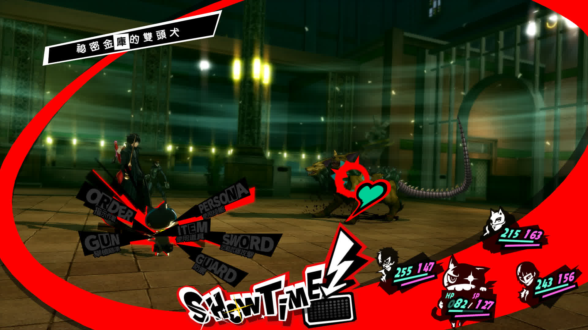
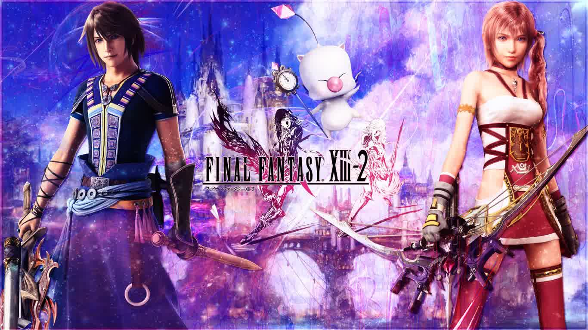
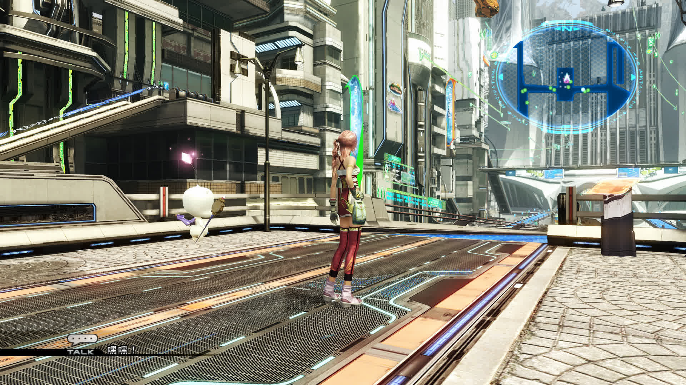
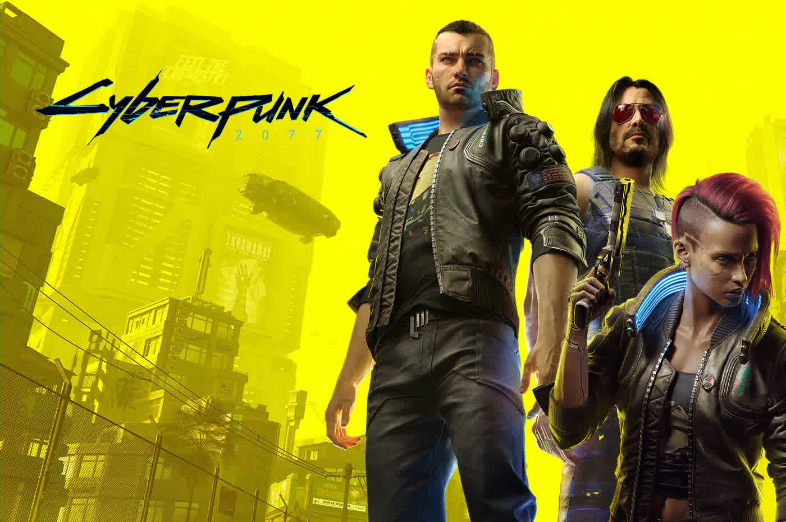
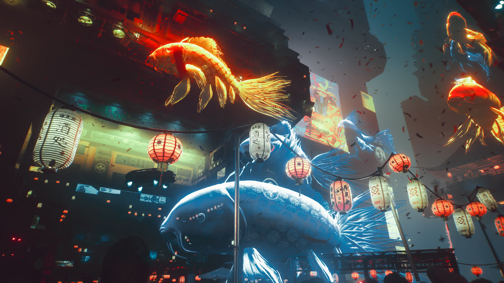
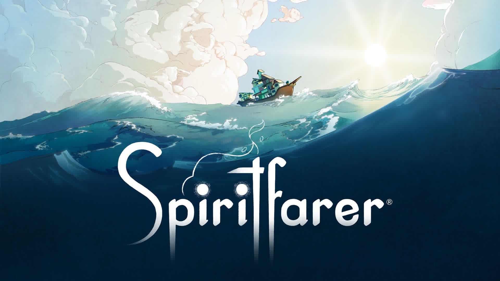
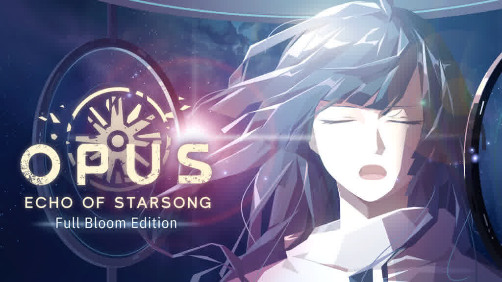

2022年游戏总结
今年由于要准备考研，博客几乎没怎么更新，游戏玩的也比较少，算上填坑、试玩、弃坑的粗略计算大概 20 款，其中不乏近年的新游戏以及一直想补的老游戏，以下是从中选出的几款个人觉得比较有的聊的作品。
勇者斗恶龙11s 寻觅逝去的时光
国民级 jrpg 系列的最新作品，各方面都非常均衡，角色构筑、战斗系统、隐藏要素的设计已经相当成熟。给我印象最深刻的还是本作的数值设计，将游戏流程的难度曲线设置的非常平缓，正常推进流程的情况下，既不会让战斗太过困难，也不会让战斗太过简单，整体战斗节奏非常舒适。剧情部分虽然较为王道，但人物性格塑造不错，能够让人代入其中，同时也有诸如人鱼的故事这样动人的剧情。
本作作为传统 jrpg 给我的感觉就是一切做的都很不错，但总感觉还差那么一口气，整体上设计还是过于保守，没有让我感到特别惊艳的地方。同时很多设计放在今天来看确实有点过时了，主要还是大量无聊的重复劳动，尽管特别的二周目剧情算是一个亮点，但也意味着要重新体验一遍几乎一样的流程，放在今天确实是很难以让人坚持的。另外本作的配乐由于大量沿用了以往作品的配乐，原创配乐不多，虽然单听确实还不错，但与游戏本身的故事结合并不好，在城镇重复的交响乐反倒让人感觉很吵。
用一句话总结本作：如果 jrpg 设计有模板的话，那就应该是这样，一切都是传统的味道。但我个人还是希望系列能够在保留 jrpg 传统设计的同时，尽可能加入一些符合现代游戏设计理念的元素。
女神异闻录5 皇家版
本作其实是从去年 8 月份开的坑，期间由于种种原因搁置了，直到今年才真正通关，总游戏时长约 100 小时。
本作可以说是现在综合素质最优秀的 jrpg 作品之一了，jrpg 核心的音乐、人设、对白、战斗系统各方面都非常优秀，几乎很难找出缺点。尤其要吹一吹本作的 UI 设计，在本身具备极佳的美观性和时髦值的同时，又拥有很强的实用性。具体体现在游戏中的很多菜单切换都非常合理且便捷，尤其是战斗时的按键操作被很好的简化，配上本作相较于传统 jrpg 快节奏的战斗与炫酷流畅的演出效果，使得原本较为重复的回合制战斗显得毫不枯燥乏味。

对于 Persona 系列这种按日期来推进游戏流程的游戏模式，开始时还觉得节奏较慢，内容重复且限制较多，但越玩到后面越喜欢，精心设计的不少诙谐幽默的对话使得日常部分非常轻松而又有趣。此外，系列发展到第五代，其标志性的面具合成系统已经非常成熟，兼具深度和趣味性，在天鹅绒房间听着《全ての人の魂の诗》纠结面具的合成选择已经成了游戏中后期的常态。同时本作的迷宫设计也非常优秀，不仅迷宫本身的关卡设计过硬，且各迷宫风格迥异的美术设计与叙事部分结合的非常好。轻松的日常与优秀的战斗两者相结合就使得是本作如此让人沉迷。
夸了这么多，但我对本作不满的地方也不是没有，主要是角色羁绊部分做得还不够完善，角色的羁绊剧情基本上和游戏主线是两个世界，既不会受到主线的限制也对主线几乎没有影响，而且羁绊的剧情部分也乏善可陈。但也可以理解，这方面想做好确实比较困难，但我还是期待未来的六代能够在这方面有所改进。
综合来讲本作绝对是我最喜欢的 jrpg 作品之一，同时也是近年最好的 jrpg 之一。
最终幻想13-2

个人“最终幻想补完计划”的又一部作品，之前有尝试过 ff13 本篇，但由于较为无趣的战斗系统和过于死板的单线流程而弃坑，本来对这一作并不抱太大期望，没想到意外的还不错。
作为《最终幻想》正传系列作品，音画表现必然不会拉跨，尽管本作还是发售于 2011 年的 ps3 时代的老游戏，但其画面素质依然不逊色于如今大多数日系厂商的最新作品。我尤其偏爱本作的音乐风格，将系列一贯的幻想风格与本作的科技感很好的结合，放在今天依然非常惊艳。

13 本篇或许是由于过于注重技术力和演出效果把 rpg 的核心系统给丢了，本作在这方面有很大的改进：更加富有策略性的战斗系统和具备很大构筑空间的怪物系统让本作的战斗具备一定深度。前作单线流程部分给人的感觉就是沿着单行道前往一个新的场景，路途中打个怪再播个片，反复循环，即便流程存在一些岔路，但也基本不存在任何关卡设计。而本作在一开始就把空间上的限制放开，新颖的时间穿越系统不仅很好的为叙事服务，而且还赋予本作很强的探索空间，找回了 jrpg 本源的冒险感。虽然 rpg 部分的设计还称不上优秀，但整体的体验还是不错的。
最后稍微提一嘴本作的剧本，或者说是整个 ff13 三部曲的剧本。ff13 系列的世界观太过庞大且复杂，而且叙事又很隐晦，整体玩下来让人一头雾水，很多地方的情节又缺乏逻辑。ff13，包括个人特别喜欢的 ff15 这两代的剧本部分感觉路越走越偏了，世界观设定新奇且华丽，但剧情本身和人物塑造部分却非常空洞，远不及以往作品给人的印象深刻。希望 ff16 在回归传统剑与魔法世界观后剧本部分能够回到正轨，重新找回系列最初给人的那份感动。
弹丸论破 希望学园与绝望高中生

本作也不是今年才开始玩的，之前就在 psv 上体验过一阵，感觉风格过于怪异就没往下玩，直到今年加入 xgp 之后才想着重新开坑。
正如上面所提到的，本作的风格和人设都很“怪”，初次上手的直观感受就是二次元浓度爆表，给人感觉这不是什么正经游戏。但在通关之后却发现本作在猎奇的外表下，藏着的却是一个正儿八经文字推理游戏的内核。推理部分和悬念设计非常优秀，看似荒诞胡闹的现象最终都会有一个明确的解释。另外必须夸一夸本作的人设，本作的人设虽然很多时候过于浮夸，但这样做的好处是能够给玩家留下深刻的印象，玩家能在脑海中对每个人物有一个感性的认识，制作组也很好地利用了这一点，在推理环节给玩家设置了重重陷阱，让人惊觉脑洞之大。
系列的定位是“高速推理游戏”，各种花里胡哨的辩论效果让人眼前一亮，但随之附带的动作系统个人却不太能接受，不过好在游戏提供了简易模式。总的来说，只要能接受本作猎奇的设定，同时还对文字推理游戏感兴趣的话，本作还是一部不容错过的作品。
赛博朋克2077

原本在宣发阶段还以为是一个赛博朋克式的 gta，但事实上本作还是一个典型的 cdpr 式的作品，一个以跌宕起伏的故事和多样的分支选择为核心的 rpg.
优点自不必多说，《巫师3》在叙事上的优秀表现在这一代得到了很好的继承，多样且戏剧化的支线任务遍布了整个夜之城。同时，本作相较于《巫师3》相比同类游戏较弱的演出效果，极大地强化了主线流程的表现力，加之第一人称下更强的代入感和优秀的中文配音的加入，主线剧情的表现力绝对可以说是超一流的水准，整体的叙事表现相较于《巫师3》又有了长足的进步。

但或许是 cdpr 第一次尝试以现代都市为背景的开放世界，本作的开放世界的设计简直是无聊至极，整个城市构建的毫无真实感可言，愚蠢的路人 AI 和过少的交互元素都让这个偌大的夜之城难以让人沉浸。另外 rpg 的系统上个人认为也不那么有趣，尽管《巫师3》的整个 rpg 系统也不算优秀，但至少也存在像装备藏宝图这样很具探索感的设计，但本作的整个装备构筑部分个人基本找不到什么可玩点。可能我是一个更偏向于日系游戏的玩家，很难接受美式 rpg 中过于冗杂的装备系统，体现在本作中就是一场战斗下来捡了一堆武器，但事实上能用的寥寥无几，大多数都是留着卖钱的垃圾，不同武器所带来的数值提升也显得非常随意，很难体会到 jrpg 中那种角色能力成长所带来的数值之美。整个流程的战斗系统我基本上都没怎么研究，就这么硬着头皮通关了游戏，这部分的内容对我来说相较于《巫师3》是完全倒退的。
事实上本作也不是今年才接触的，当时还没有买新主机的时候就早早预购了游戏的 ps4 版本，最后的结果就不必多说了，游戏的首发版本不仅 bug 多到令人发指，而且在上世代主机上基本是一个不可玩的状态，最后不得已卖掉了二手盘。直到今年次世代更新的发布，我又在 xbox 上买了一份，xss 上能以 1080p 动态分辨率以 60 帧稳定运行，体验已经很不错了，但即便如此，我在整个游戏流程中遇到的 bug 依然高于大多数游戏的首发版本，可见当初首发坚持通关的玩家经历了什么…
灵魂旅者

一款非常温暖治愈的游戏，游戏的基本内容是玩家扮演一名灵魂摆渡人，寻找散落在各个岛上的逝者灵魂，与他们互动，完成他们的心愿，并最终与他们告别。玩法部分简单描述就是模拟经营，玩家需要收集各种素材，为船上建造厨房、农场、果园等各种建筑，以此满足主线任务推进的需要。
游戏给人的初印象就是悠扬舒缓的音乐和精美的 2d 手绘画面，营造了一种非常温暖治愈的氛围。游戏最值得称道的还要属玩家与 npc 那极其细致的交互，船上的逝者灵魂并非只是每天等待着玩家的服务，他们每一位都在船上担当着一定的任务，包括加工麻线、制作点心等等。虽然这些机制实际上不会对玩家的任务有太大的影响，但却很好的加深了玩家与 npc 的羁绊，为最后的离别奠定了情感基础。当然，游戏在交互方面给我留下最深刻印象的，也是当初吸引我入坑的部分还是游戏独特的拥抱系统，与每位 npc 拥抱的动画做得非常生动细致，同时这一机制又贯穿于整个游戏，npc 在不开心时，玩家可以选择拥抱改善他的心情，最终离别的时刻，拥抱又是作为玩家与 npc 的最后一次互动而出现，兼具功能性和情感传达，可以说是整个游戏的点睛之笔。
游戏的 gameplay 部分也很好的契合了游戏的舒缓节奏，素材的收集和加工并非一键完成，而是由各种小游戏所填充，包括砍树、冶炼、纺织都需要玩家手动来完成。但世上没有完美的设计，这一机制初见确实很有趣，但越到游戏后期，随着系统的愈发复杂和玩家的任务量的增加，就越能感到该系统所带来的疲惫感。其实整个《灵魂旅者》的游戏体验也是如此，在没有对各机制感到乏味时感觉特别惊艳，但后面过多的重复劳动还是很大程度上打消了玩家的热情，如果游戏能对流程进行一定程度的精简，想必体验上会好不少。
事实上本作我现在也还没有通关，但我想有时间一定会打完的。
OPUS 龙脉常歌

这可能是我玩过最喜欢的叙事类游戏之一。
游戏由中国台湾工作室 Sigono Games 开发，故事的世界观设定新颖，很好地将中国神话与太空背景相结合，诸如名为“烛龙”的太阳和名为“大荒”的黑洞这样的称谓在游戏中大量存在，虽然整体体验下来这样的设定更多只是一个表皮，而且游戏的剧情本身与太空背景的结合也并不紧密，更像是一个披着科幻外衣的传统故事。但这丝毫不影响我对它的评价，能看到一个洋溢着中国传统文化的科幻故事本身就已经很满足了。
游戏的故事情节本身其实并不算有多么令人意外，甚至还有些俗套，部分情节显得过于巧合，甚至游戏的最终结局在开头就已告知玩家，但它还是凭借优秀的叙事和人物刻画让故事深入人心，成为我今年印象最为深刻的旅程。不同于很多西方和日式情节，本作男女主之间的感情表现的非常克制，而在这样克制的行为举动中玩家却能深刻的体会到他们的之间的羁绊，这种感觉很像之前《最终幻想9》给过我的感受，无需直接的言语表述便以深入人心。另外，限于游戏体量的大小，本作登场的角色数量并不算太多，但都塑造的各具特点，各人物在剧情的推动上都起到了或多或少的作用，绝无工具人的存在。
音乐部分也值得一提，本作音乐其实单拿出来听似乎并不算很好听，能给人留下印象的也不多，但与故事剧情的结合却非常好，音乐总会在剧情的某一关键节点响起，与制作组精心准备的演出相结合，给玩家带来足够的情感冲击。另外，本作现在的版本是加入了配音的，包括中文和日文配音，因为觉得台配的中文配音稍微有点出戏，就选择了日文配音。
我个人其实很少玩 galgame 那样的纯文字冒险游戏，即便它们中很多都有跌宕起伏的故事情节，但完全没有可操作部分也让我很难只为了故事本身而完成游戏流程。而像《龙脉常歌》这样的游戏模式我却很喜欢，本作也存在一些诸如模拟经营和解谜的玩法，但都设计的非常轻度，属于是故事情节与情节之间衔接的过渡元素，能够很好的调节游戏节奏。飞船虽然也有油量和耐久度的限定，但都在制作组的掌控之中，实际上只要按正常流程走基本不会出现数值见底的情况，这个限制的加入更多是为了营造星际航行时的紧张感，而非给玩家出的难题。gameplay 缺乏挑战和负担也可以让玩家更加专注于游戏所要传达的故事本身，而不至于因此分散了注意力，这也是前作《灵魂之桥》我觉得做得不够好的地方，“雪地探索捡垃圾”的玩法对于这类叙事游戏来说还是稍显繁琐。
本作我其实已经加入 steam 心愿单已久，却没想直接加入 xgp 了。通关了 xgp 的版本之后，出于对本作的喜爱，我又赶在 ns 版本打折的时候又买了一份，也算是对制作组的支持，希望它们的下一部作品能够做得更好。
 微信
微信 支付宝
支付宝